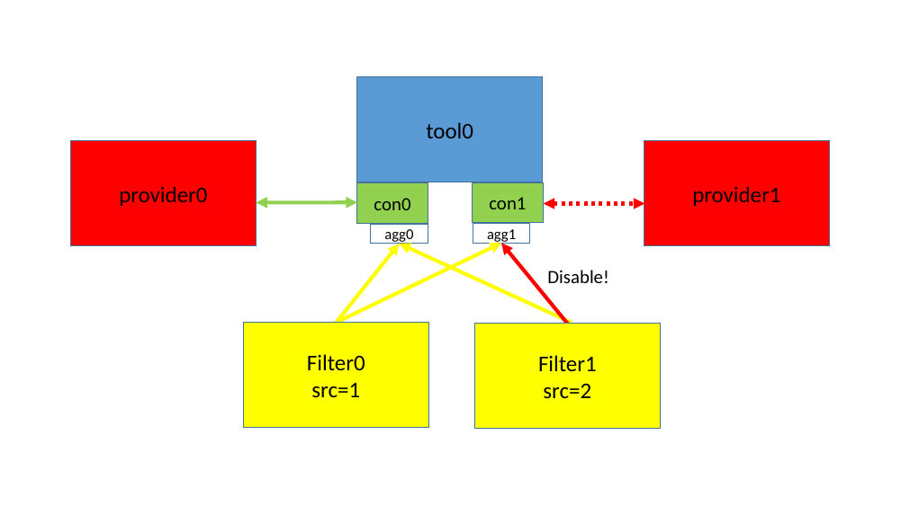
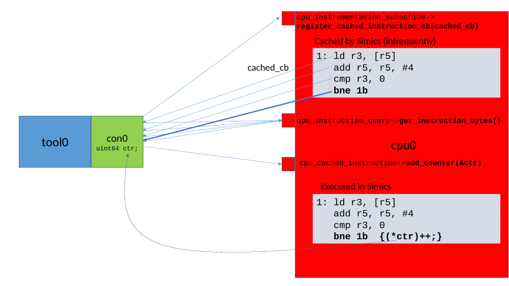

Simics instrumentation framework defines a set of new interfaces that could be used to add instrumentation. Most of these are optional by the design. In principle, the only interface that must be used for instrumentation to show up in the list-instrumentation command are some Python functions in Simics' instrumentation module.
Currently, the only supported interface for implementing instrumentation tools is to use the instrumentation.make_tool_commands() python function. This makes it easier to write instrumentation tools, and to automatically implement a number of standard commands for those. These commands will automatically interface the instrumentation "database" which keeps track of currently used instrumentation (tools, providers and filters objects connected).
This factory function should be called from the tool's simics_start.py file, which is automatically run when Simics starts. The instrumentation.make_tool_commands() function takes many arguments (allowing customization on which commands that should be created), but only a few arguments are actually required.
A tool which make use of the instrumentation.make_tool_commands() function, must implement the instrumentation_tool interface. The instrumentation_tool.connect() method should return an object pointer with the associated data-structure for the connection. As shown in figure 16 and figure 17

By having a dedicated object for each connection, the tool will more easily be able to handle simultaneous calls from providers that execute in different threads in Simics. This requires that each connection maintains its own connection specific data (and not access any connection global data). The tool can then fetch the connection specific data from all connections and merge these into a unified view for the complete result of all connections.
If a connection is about to be removed, the instrumentation_tool.disconnect() function is called. This requests the tool to un-register the connection from the provider and to remove the associated connection object, as illustrated in figure 19.

When a connection is created, the framework also creates an additional small Simics object of the instrumentation_filter_aggregator class. This object is what the filters communicate with, when enabling/disabling each connection. The aggregator will look at all sources and control enabling and disabling with the instrumentation_connection interface. The filter implements the instrumentation_filter_master interface and talks to the aggregator via the instrumentation_filter_slave interface. See figure 19.

Figure 20 shows how the aggregator takes input from multiple sources and decides if the connection should be enabled or disabled at this time. As long as any filter-source is disabled, the connection will be disabled.

Instrumentation setup is regarded as per session, that is, the connected instrumentation is not saved in any checkpoints. This means that the user will need to re-establish the instrumentation connections when starting from a checkpoint. All instrumentation tools and filters should set class_data_t.kind = Sim_Class_Kind_Pseudo.
The API functions and interfaces that a tool should use are located in the simics/simulator-iface/instrumentation-tool.h header file.
To get started writing an new instrumentation tool, a skeleton can be created by running the following command in the project:
$ cd my-project
my-project$ ./bin/project-setup --instrumentation-tool my_tool
This will create a new modules/my_tool directory containing associated required files. Search for USER-TODO markers in the generated files for a description on what, and where, additional logic needs to be inserted. It can also be useful to take a look at the distributed source files of example tools, that are included in the package.
Tools can be called simultaneously from providers in different executing threads. It is up to the tool to handle this parallelism itself. The tool has some choices how to handle multi-threading:
The interfaces needed to design a filter is located in the simics/simulator-iface/instrumentation-filter.h header file.
To get started writing an new instrumentation filter, a skeleton can be created by running the following command in a project:
$ cd my-project
my-project$ ./bin/project-setup --instrumentation-filter my_filter
This will create a new modules/my_filter directory containing associated required files. Search for USER-TODO markers in the generated files for a description on what, and where, additional logic needs to be inserted. It can also be useful to take a look at the distributed source files of example filters, that are included in the package.
A filter must implement the instrumentation_filter_master interface and drive the instrumentation_filter_slave interface for the slaves it has been assigned. The slaves are instrumentation_filter_aggregator objects which are automatically created when a connection is created.
When a filter object is created, it must first be assigned a session-unique "source-id". This can be retrieved from the python instrumentation.get_filter_source function. This can be achieved from the filter's simics_start.py file, which should contain a command for creating the filter. Once the object has been created, the python code could inform its source-id to the filter by calling the instrumentation_filter_master.set_source_id function.
The instrumentation_filter_master.add/remove_slave functions will be called when ever <tool>.add-filter is adding this tool, or when additional connections are added or removed from the tool.
Note that filters could be assigned slaves located in different cells (executing in different threads). It is up to the filter to handle this, for example by not supporting it, to avoid strange threading problems. This can be achieved by returning false in the add_slave method when the provider_obj is located in a different cell than previous slaves.
How a filter enables/disables the slaves is up to the filter. There are some scenarios:
Figure 21 show how a filter reacts on a provider and only enables/disables the slave which is associated with the same provider.

In figure 22, however, the filter tries to enable/disable connections in two different cells. This could potentially crash. If cross-cell filtering is needed, the connection in the other cell must be relayed through a SIM_run_alone() function, which will be delayed and invoked when it is safe to do cross-cell calls.

How the actual communication between a provider and tool should be achieved, must be designed case by case. The instrumentation framework itself, does not have any specific requirements on this. When a new provider interface needs to be designed, it is recommended to re-use design philosophies and naming schemes from already existing interfaces, keeping provider interfaces as consistent as possible.
In some way, the tool must inform the provider that it wants to get instrumentation information. Typically there are two designs for this:
Two generic interfaces can be implemented in the provider (when found useful):
instrumentation-order and instrumentation-move commands. list-instrumentation-callbacks command to list callbacks that has been installed in the provider. These interfaces are located in the simics/model-iface/instrumentation-provider.h header file.
Simics CPU instrumentation is provided on top of the generic instrumentation framework, where the processor model acts as a instrumentation provider. This chapter describes Simics' processor instrumentation API.
A tool that wants to connect to the CPU instrumentation and use the instrumentation.make_tool_commands function must set the provider_requirements argument to cpu_instrumentation_subscribe, and maybe more interfaces.
The cpu_instrumentation_subscribe interface is the main interface used, but there are also other interfaces that must be used in certain circumstances as a consequence of some of the callbacks. Figure 23 shows some of the interfaces that are used.
Note, not all CPU-models support all parts of the CPU Instrumentation API.

A processor does not require any implemented interfaces from a tool, instead a tool will subscribe for information from a processor and register function callbacks which are invoked when the subscribed feature is triggered on a processor.
The interface can be used in two different ways:
NULL or None, in C or Python respectively, as connection pointer. This allows the interface to be used from a Python script, without the need to create Simics connection objects. With this setup, the user must control each callback by itself. When invoked, these callbacks will be called prior to the connection grouped callbacks, which also allows the processor model itself to be extended using the same interface.The interfaces used for the CPU instrumentation are located in the simics/model-iface/cpu-instrumentation.h header file. The architecture specific interfaces are located in simics/arch/x86-instrumentation.h, etc.
Subscribing to CPU instrumentation can be global (all instructions and/or memory accesses) or more carefully selected for each instruction at a time by the tool.
For example, assume a tool wants to monitor when certain instructions are executed. This can be done in different ways, each with pros and cons. The following list tries to highlight the workings of these different ways.
With global instrumentation
By registering a callback with the cpu_instrumentation_subscribe interface using the register_instruction_before_cb() method, the tool will get a callback for each instruction executed. If the tool is only looking for certain types of instructions, it would need to use the cpu_instruction_query interface's get_instruction_bytes() method and filter out the unwanted instructions. This will become very slow. See figure 24.

With selective instrumentation
The tool can filter out which instructions it wants to get a callback from more selectively. This is done by registering a callback with the cpu_instrumentation_subscribe interface using the register_cached_instruction_cb() method. The tool will now be called when each instruction is about to be cached in the CPU model's internal instruction cache (this is a Simics internal cache and not the same as the cache found on a real processor).
Just as before, the tools must decode what instruction that is about to be executed using the cpu_instruction_query interface's get_instruction_bytes() method. For the interesting instructions the tool can now register a dedicated callback using the cpu_cached_instruction interface's register_instruction_before_cb() method. Each cached instruction callback also carries a user-data pointer, which can be used by the callback. This means that the analysis is performed only once. There are, however, multiple reasons why this internal cache may be flushed, if that happens the instruction must be re-decoded.
Using the cpu_cached_instruction interface is much faster than filtering for an instruction of interest each time it is executed, since the callback will only be called for the requested instructions. See figure 25.

With a counter
This is if the tool only wants to count how many times certain instructions are executed. The cpu_cached_instruction interface with the add_counter method, supports the fastest way to count instructions. Adding a pointer to a 64-bit counter for specific instruction means that the counter will increment each time this particular instruction is executed. This has very low overhead. See figure 26.
